ERISAKERIA
Une scientifique née de la faim du Hueco Mundo. Elle observe, comprend, expérimente — mais aucune réponse ne parvient réellement à la rassasier.
Une émotion.
Rien d'autre.
De sa vie d'avant, Eris ne possède aucun visage, aucun lieu, aucun objet et aucun repère visuel.
Il ne lui reste qu'une émotion. Une sensation ancienne, difficile à définir, comme la trace d'un événement dont l'image aurait été entièrement arrachée.
Elle ne sait ni d'où vient cette émotion ni ce qui l'a provoquée. Elle sait seulement qu'elle existe encore, isolée de tout souvenir visuel.
Ce fragment n'est pas un souvenir au sens véritable. C'est un manque. Une preuve silencieuse qu'avant le masque, avant la faim et avant Eris Akeria, quelque chose comptait suffisamment pour survivre à l'oubli.
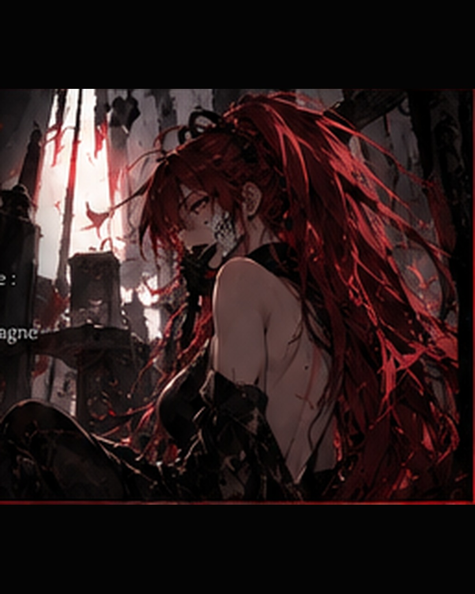
Avant le nom,
il y eut l'instinct.
Lorsqu'elle apparut dans le Hueco Mundo, elle n'avait ni projet, ni science, ni hiérarchie. Son existence se résumait à survivre.
Elle avançait parce que s'arrêter signifiait être dévorée. Elle chassait parce que la faim l'exigeait. Elle apprenait sans savoir encore qu'elle apprenait.
Chaque affrontement la confrontait à une règle différente. Chaque proie lui montrait une nouvelle manière de vivre, de fuir ou de tuer.
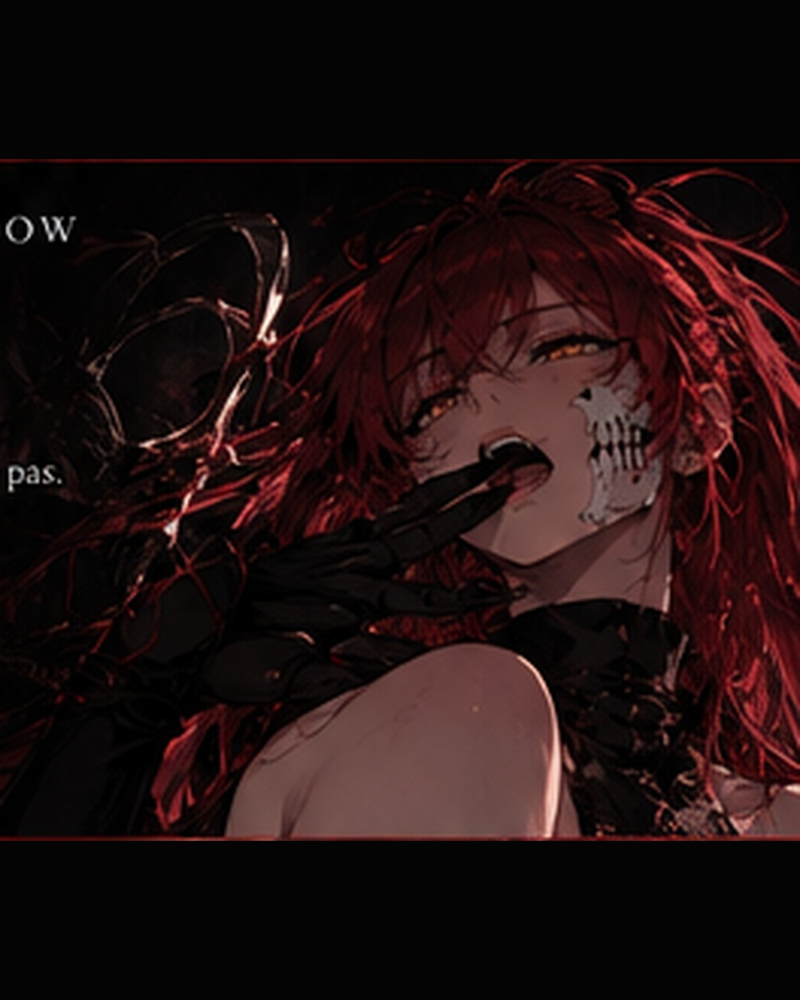
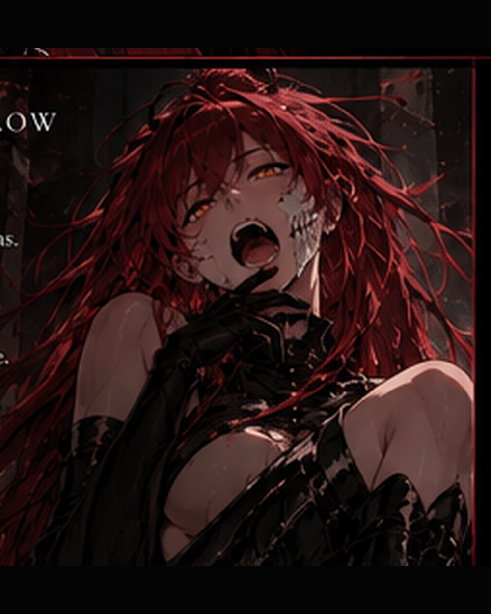
Dévorer pour survivre.
Observer pour comprendre.
Au début, la faim était physique. Puis elle commença à devenir autre chose.
Eris ne se contentait plus de vaincre. Elle remarquait les habitudes de ses adversaires, les réactions de peur, les signes d'agressivité, les comportements qui précédaient une attaque.
Sans langage pour formuler ses conclusions, elle accumulait déjà des données. L'instinct lui disait de manger. Quelque chose de plus silencieux lui disait de regarder avant.
Ce réflexe allait survivre à toutes ses transformations.
L'évolution lui donna
davantage que la force.
À mesure qu'elle progressait, Eris gagna ce qui allait devenir son arme la plus importante : la capacité de questionner.
Sa conscience se structura. Les sensations devinrent des intentions. Puis vinrent les premiers mots, et avec eux la possibilité de donner un nom à ce qu'elle observait.
Chaque évolution ouvrait une nouvelle porte, mais révélait surtout l'existence de dizaines d'autres portes encore fermées.
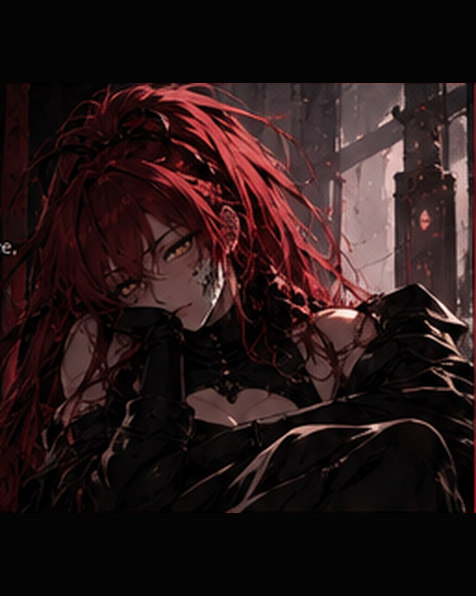
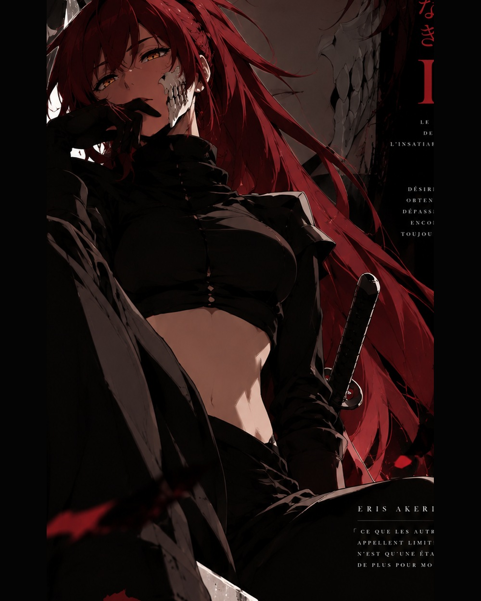
La faim trouva
un visage.
En devenant Arrancar, Eris ne perdit pas ce qu'elle avait été. Son fragment de masque, son zanpakutō et son instinct restèrent les traces visibles de son origine.
Mais son monde changea. Elle pouvait désormais parler, raisonner, comparer, conserver des hypothèses et surtout choisir ce qu'elle voulait poursuivre.
Pour la première fois, la survie n'était plus son seul objectif. Elle pouvait consacrer son existence à comprendre pourquoi les Hollows devenaient ce qu'ils étaient.
Le savoir trouve
une méthode.
À Las Noches, Eris trouva dans la section scientifique un environnement adapté à sa manière de penser.
Elle ne voulait pas simplement accumuler des faits. Elle voulait expérimenter, confronter des hypothèses, reproduire des phénomènes et comprendre leurs causes.
Son calme n'était pas de l'indifférence. Il lui permettait d'observer suffisamment longtemps pour voir ce que d'autres ignoraient.
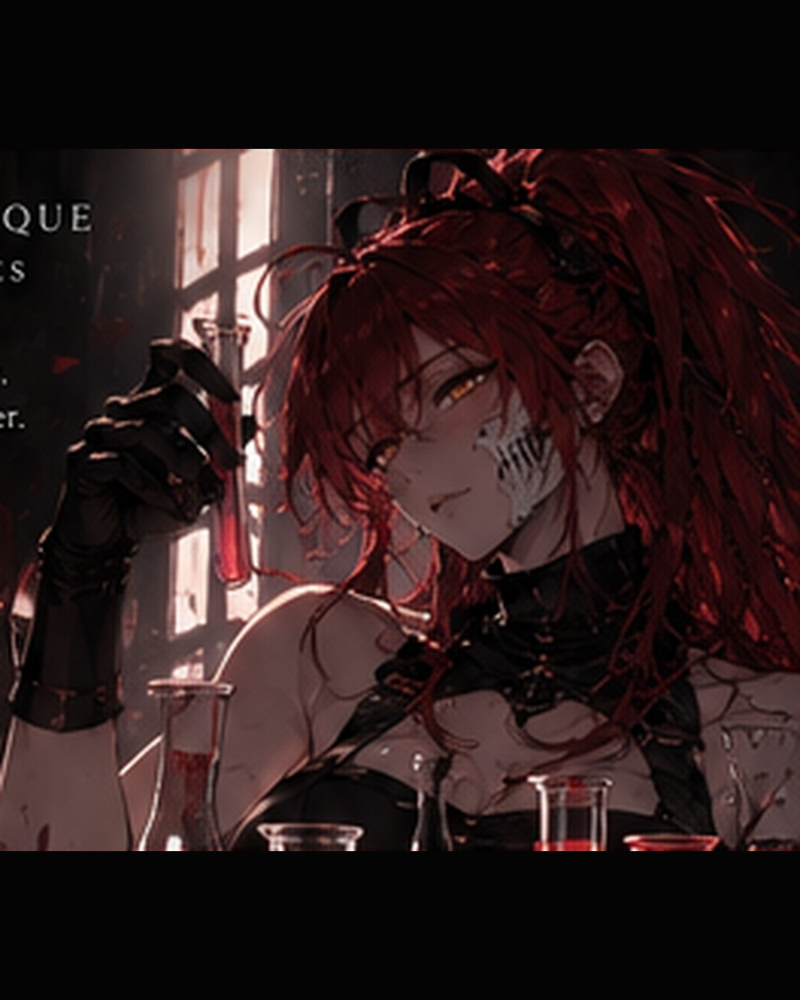
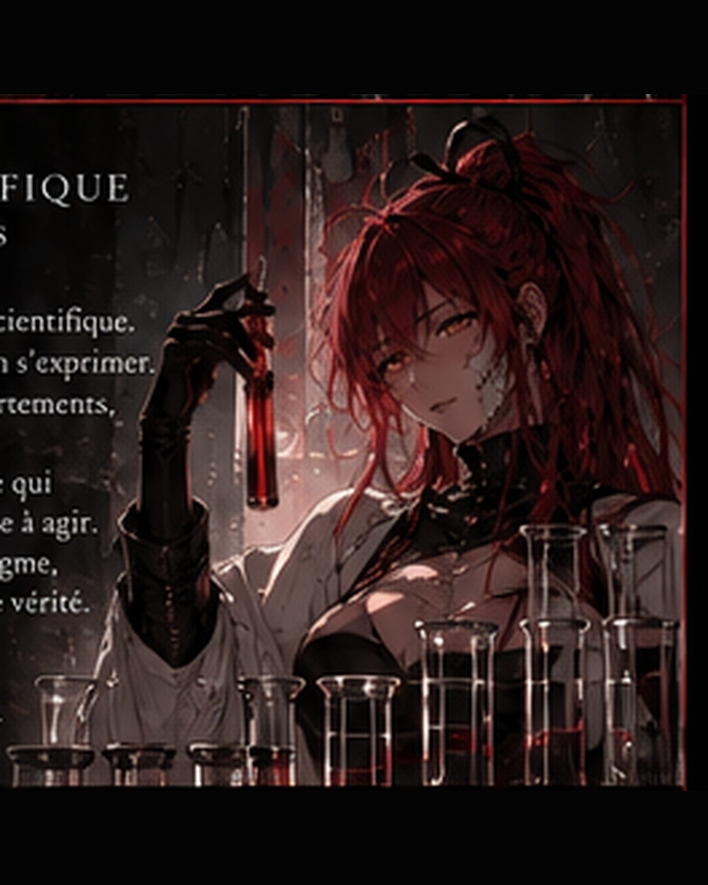
Un Hollow silencieux
est-il vraiment vide ?
Eris veut démontrer que les Hollows incapables de parler peuvent posséder une intelligence, des émotions et une forme de raisonnement.
Elle étudie leurs réactions, leurs choix, leurs habitudes et leurs comportements face à la peur, à la douleur, à la colère ou à l'attachement.
Pour elle, l'absence de langage ne prouve rien. Un être peut comprendre sans disposer des mots nécessaires pour l'expliquer.
Cette recherche l'amène naturellement à disséquer la notion d'émotion elle-même. Peut-on identifier ce qu'un Hollow ressent sans projeter sur lui une pensée humaine ? Comment distinguer un réflexe d'une décision ? Jusqu'où une créature dominée par l'instinct peut-elle apprendre ?
Primera.
Eris a atteint le rang de Primera. Une position élevée, mais certainement pas une destination.
Chaque promotion lui a donné accès à davantage de sujets d'étude, de rapports, d'expériences et de responsabilités. Chacune a également élargi le champ de ce qu'elle savait ne pas connaître.
Son rang actuel confirme sa place au sein de la section scientifique. Pour Eris, il ne représente pas une victoire définitive : seulement une nouvelle hauteur depuis laquelle elle peut voir encore plus loin.

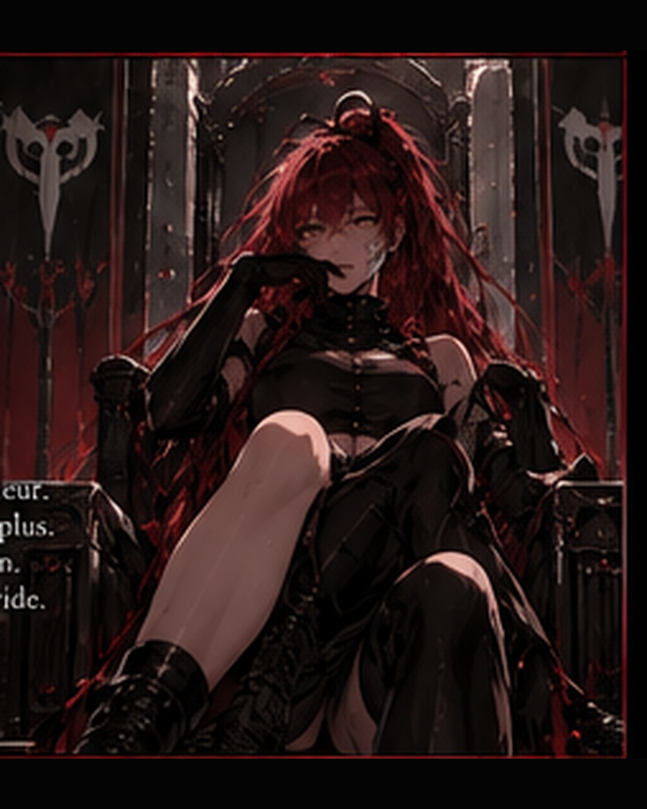
Le péché mineur
de l'Insatiabilité.
Eris sert sous les ordres de Julius Lowneur — L'Ogre de la Gourmandise.
Dans l'Ordre des Préceptes, son aspect porte un nom précis : l'Insatiabilité.
Sa faim n'est pas celle de Julius. Chez Eris, elle transforme le savoir, l'expérience, la puissance et même la compréhension de soi en choses qu'il faut toujours pousser plus loin.
Sa place de péché mineur donne un cadre à cette Insatiabilité sans jamais en fixer la limite.
Le I
dans son dos.
La marque matérialise ce besoin qui ne trouve jamais de point final.
Depuis son apparition, Eris ressent plus violemment ce qui lui manque. Une réponse obtenue appelle immédiatement la suivante. Une limite comprise devient une limite à franchir.
Son effet secondaire connu est physique : des migraines, parfois assez intenses pour perturber sa concentration.
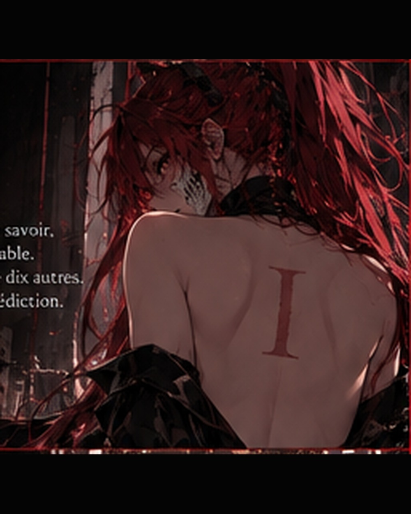
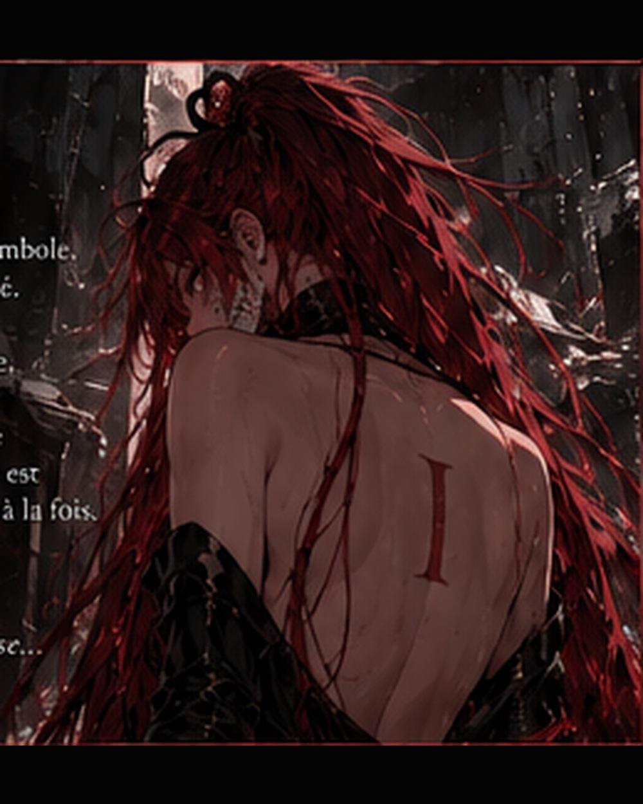
Il manque encore
quelque chose.
Ce qui aurait pu n'être qu'une grande curiosité s'est progressivement transformé en besoin.
Eris veut connaître davantage. Comprendre davantage. Expérimenter davantage. Devenir plus forte non pour atteindre un état parfait, mais parce que l'idée même d'un état final lui paraît impossible.
Elle peut obtenir ce qu'elle cherchait depuis des jours et ressentir une satisfaction réelle. Mais cette satisfaction s'efface rapidement. Derrière elle revient le même vide.
Ce n'est jamais suffisant.
Une voix qui transforme
le manque en provocation.
À mesure que l'Insatiabilité gagne en présence, une seconde voix apparaît dans l'esprit d'Eris.
Elle contraste avec son tempérament habituellement calme. Plus aiguë, plus rieuse et plus agressive, elle attaque directement ses faiblesses.
Elle lui répète qu'elle est trop faible, qu'elle n'a pas assez appris, qu'elle pourrait aller plus loin. Elle ne lui permet pas de considérer une victoire comme suffisante.
Cette présence ne remplace pas Eris. Elle pousse, provoque et amplifie.
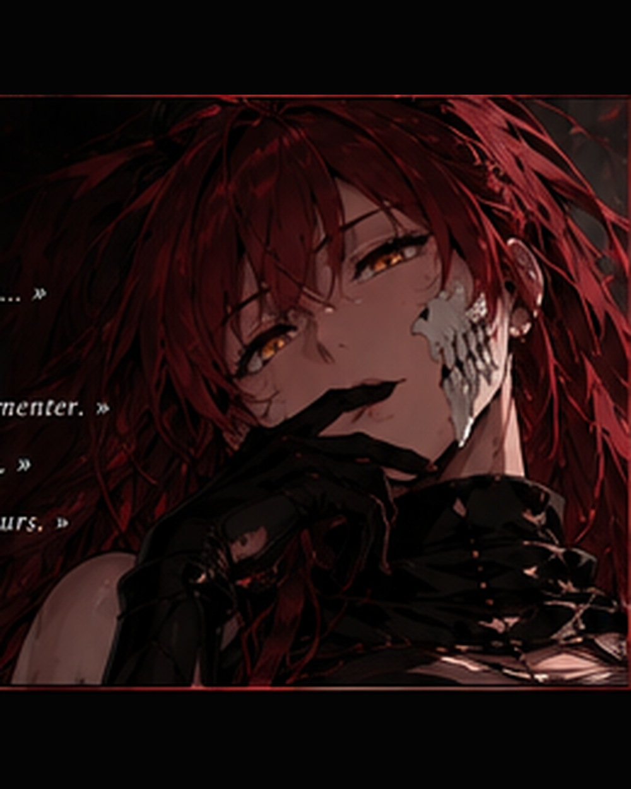
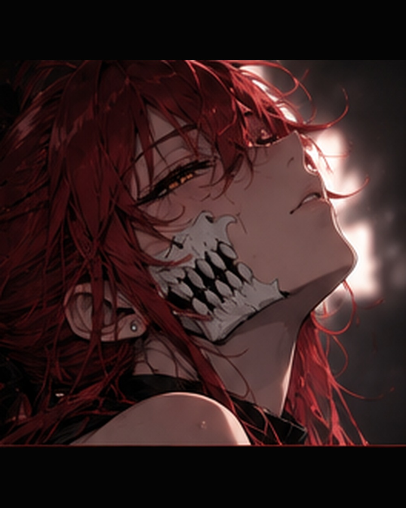
Calme en surface.
Affamée derrière le regard.
Aujourd'hui, Eris est Primera de la section scientifique et le péché mineur de l'Insatiabilité.
Elle poursuit ses recherches sur les Hollows, leur intelligence et leurs émotions. Elle cherche à comprendre sa propre évolution, à maîtriser ce que la marque I fait grandir en elle et à repousser les limites de ses connaissances.
Au centre de tout subsiste l'énigme la plus personnelle : cette unique émotion venue d'une vie dont elle ne possède aucune image.
Elle ne sait pas si retrouver son passé comblera quoi que ce soit. Mais tant qu'une question existe, Eris continuera de chercher.
RIEN N'EST
SUFFISANT.
Une scientifique peut chercher une réponse. Eris cherche ce qui se trouve derrière la réponse.